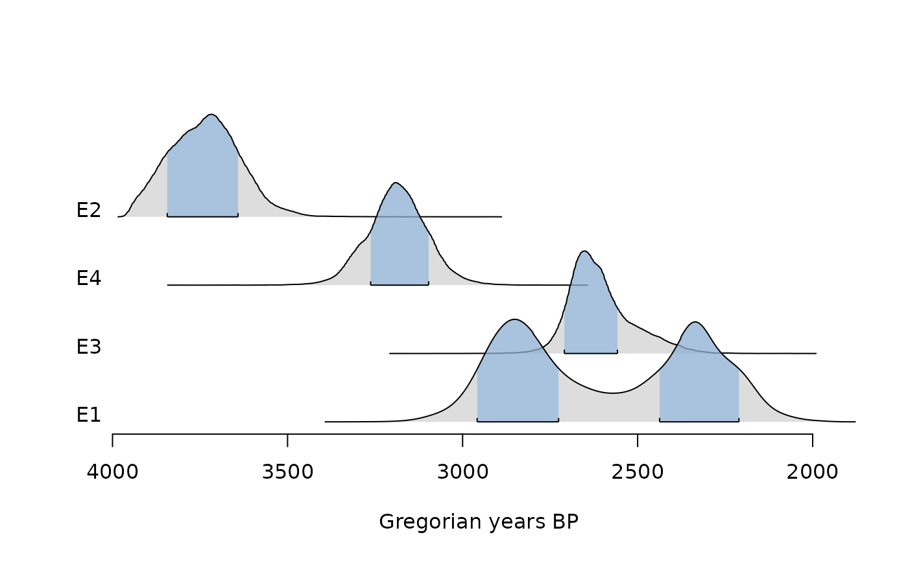
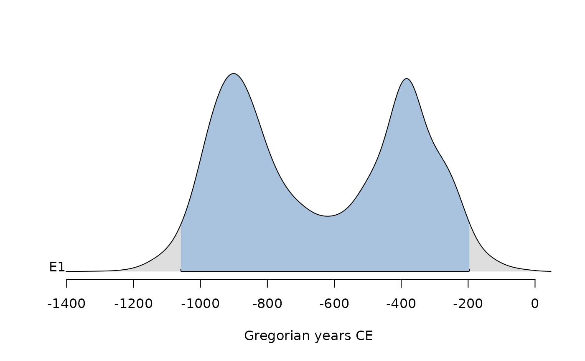
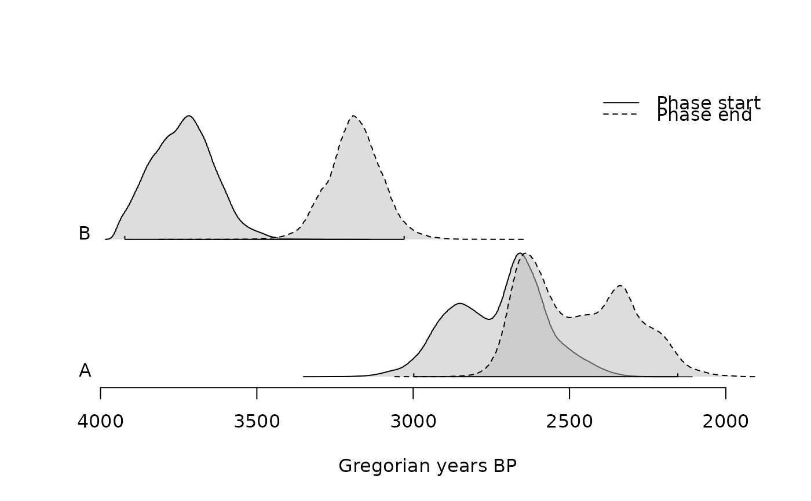
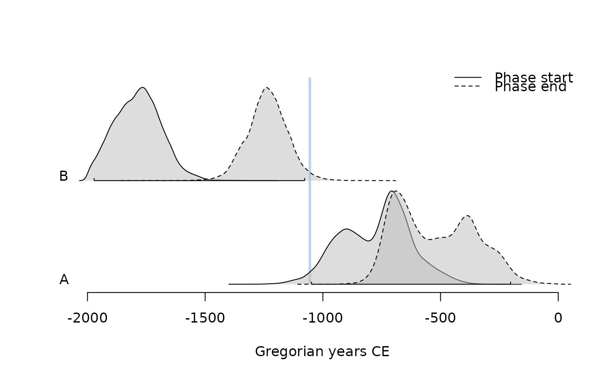
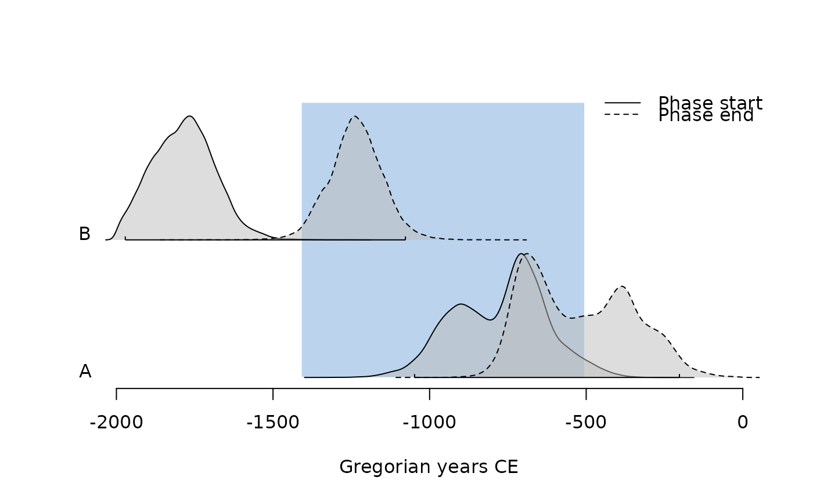
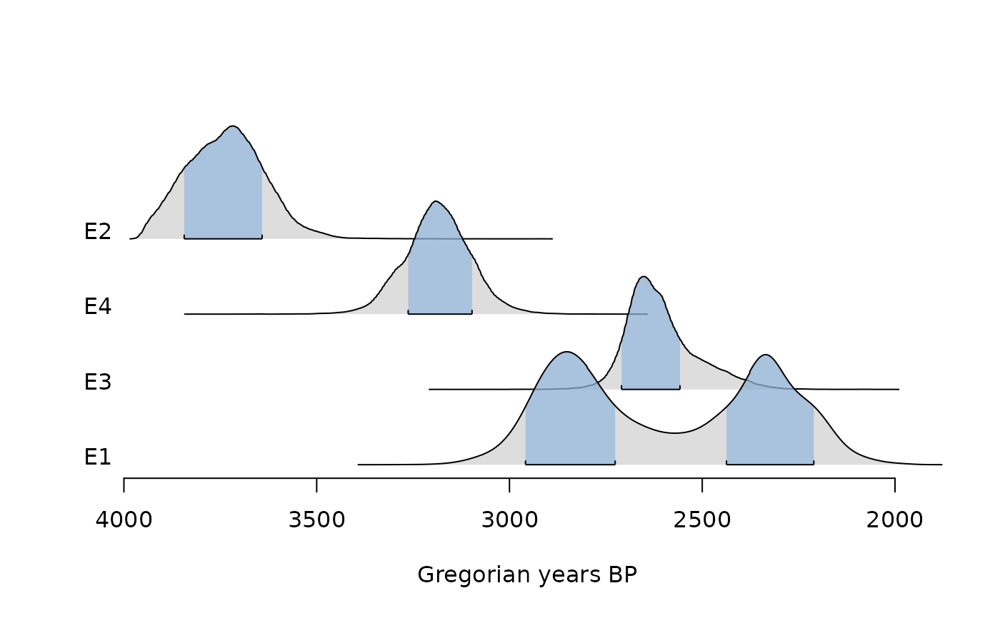
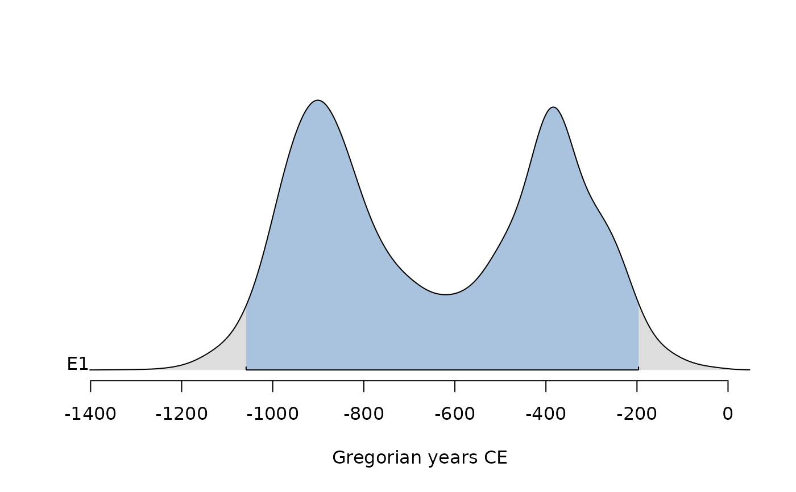
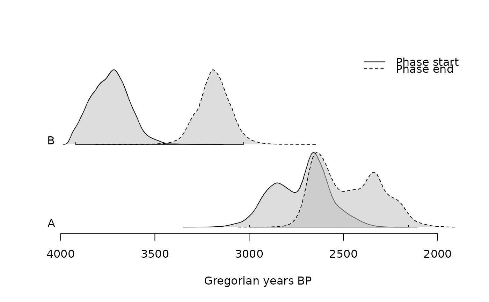
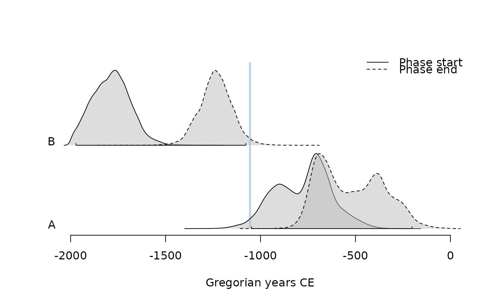
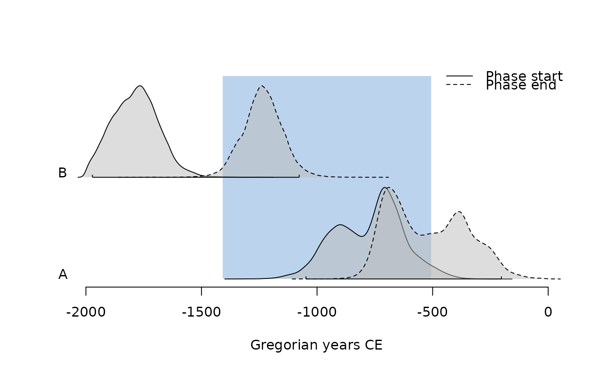

Marginal Summary Statistics for Multiple MCMC Chains
Source:R/AllGenerics.R, R/summary.R
summary.RdCalculates summary statistics of the output of the MCMC algorithm for multiple parameters. Results are given in calendar years (BC/AD).
Arguments
- object
An
MCMCor aPhasesMCMCobject.- level
A length-one
numericvector giving the confidence level.- calendar
A
aion::TimeScaleobject specifying the target calendar (seecalendar()).
Value
A data.frame where the rows correspond to the chains of interest and
columns to the following statistics:
- mean
The mean of the MCMC chain.
- sd
The standard deviation of the MCMC chain.
- min
Minimum value of the MCMC chain.
- q1
First quantile of the MCMC chain.
- median
Median of the MCMC chain.
- q3
Third quantile of the MCMC chain.
- max
Maximum value of the MCMC chain.
- lower
Lower boundary of the credible interval of the MCMC chain at
level.- upper
Upper boundary of the credible interval of the MCMC chain at
level.
See also
Other statistics:
interval_credible(),
interval_hdr(),
sensitivity()
Examples
## Coerce to MCMC
eve <- as_events(mcmc_events, calendar = CE(), iteration = 1)
## Summary
summary(eve, calendar = CE())
#> mad mean sd min q1 median q3 max start end
#> E1 -900 -638 272 -1349 -889 -658 -386 -5 -1046 -202
#> E2 -1766 -1785 100 -2000 -1857 -1785 -1719 -971 -1981 -1611
#> E3 -702 -656 92 -1229 -717 -672 -611 -67 -803 -450
#> E4 -1241 -1236 87 -1864 -1289 -1235 -1181 -719 -1401 -1064
summary(eve, calendar = BP())
#> mad mean sd min q1 median q3 max start end
#> E1 2850 2588 1680 3299 2839 2608 2338 1957 2998 2154
#> E2 3716 3737 1852 3950 3807 3735 3671 2923 3933 3561
#> E3 2652 2608 1860 3181 2667 2624 2561 2017 2753 2400
#> E4 3191 3186 1863 3814 3239 3187 3131 2669 3351 3016
## Plot events
plot(eve, calendar = CE(), interval = "credible", level = 0.68)
 plot(eve, calendar = BP(), interval = "hdr", level = 0.68)

plot(eve[, 1], interval = "hdr")

## Compute phases
pha <- phases(eve, groups = list(B = c(2, 4), A = c(1, 3)))
## Summary
summary(pha, calendar = CE())
#> $B
#> mad mean sd min q1 median q3 max start end
#> start -1766 -1785 100 -2000 -1857 -1785 -1719 -1223 -1981 -1611
#> end -1240 -1235 87 -1833 -1289 -1235 -1181 -719 -1404 -1067
#> duration 561 551 132 5 464 552 639 1157 297 806
#>
#> $A
#> mad mean sd min q1 median q3 max start end
#> start -708 -773 148 -1349 -890 -749 -671 -207 -1059 -501
#> end -690 -521 169 -1050 -670 -537 -384 -5 -776 -214
#> duration 278 253 138 1 151 249 345 880 1 487
#>
summary(pha, calendar = BP())
#> $B
#> mad mean sd min q1 median q3 max start end
#> start 3718 3737 1852 3950 3807 3735 3671 3173 3933 3561
#> end 3192 3187 1863 3783 3239 3187 3131 2669 3354 3019
#> duration 1391 1401 1820 1945 1488 1398 1311 793 1653 1146
#>
#> $A
#> mad mean sd min q1 median q3 max start end
#> start 2660 2723 1802 3299 2840 2701 2623 2157 3011 2453
#> end 2640 2473 1783 3000 2622 2487 2334 1957 2726 2166
#> duration 1674 1699 1814 1949 1801 1703 1607 1072 1949 1465
#>
## Plot phases
plot(pha, calendar = BP())

plot(pha, succession = "hiatus")

plot(pha, succession = "transition")

plot(eve, calendar = BP(), interval = "hdr", level = 0.68)

plot(eve[, 1], interval = "hdr")

## Compute phases
pha <- phases(eve, groups = list(B = c(2, 4), A = c(1, 3)))
## Summary
summary(pha, calendar = CE())
#> $B
#> mad mean sd min q1 median q3 max start end
#> start -1766 -1785 100 -2000 -1857 -1785 -1719 -1223 -1981 -1611
#> end -1240 -1235 87 -1833 -1289 -1235 -1181 -719 -1404 -1067
#> duration 561 551 132 5 464 552 639 1157 297 806
#>
#> $A
#> mad mean sd min q1 median q3 max start end
#> start -708 -773 148 -1349 -890 -749 -671 -207 -1059 -501
#> end -690 -521 169 -1050 -670 -537 -384 -5 -776 -214
#> duration 278 253 138 1 151 249 345 880 1 487
#>
summary(pha, calendar = BP())
#> $B
#> mad mean sd min q1 median q3 max start end
#> start 3718 3737 1852 3950 3807 3735 3671 3173 3933 3561
#> end 3192 3187 1863 3783 3239 3187 3131 2669 3354 3019
#> duration 1391 1401 1820 1945 1488 1398 1311 793 1653 1146
#>
#> $A
#> mad mean sd min q1 median q3 max start end
#> start 2660 2723 1802 3299 2840 2701 2623 2157 3011 2453
#> end 2640 2473 1783 3000 2622 2487 2334 1957 2726 2166
#> duration 1674 1699 1814 1949 1801 1703 1607 1072 1949 1465
#>
## Plot phases
plot(pha, calendar = BP())

plot(pha, succession = "hiatus")

plot(pha, succession = "transition")
